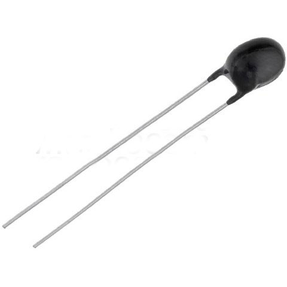
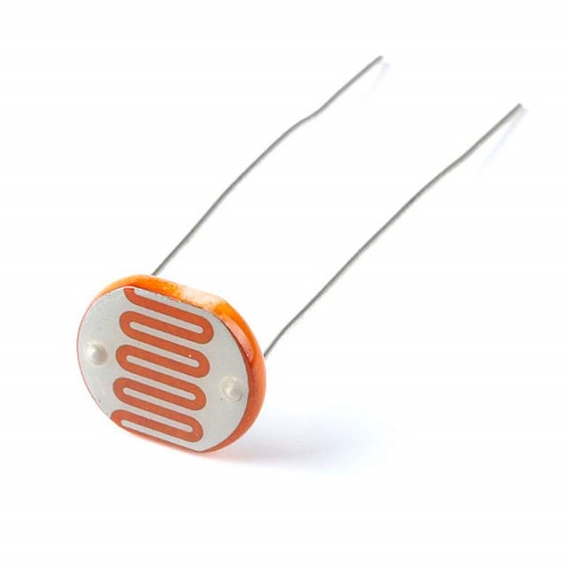

Напівпровідники#
Особливості провідності напівпровідників#
Напівпровідники (англ. semiconductors) - матеріали, електропровідність яких має проміжне значення між провідностями провідника та діелектрика (їхній питомий опір знаходиться в діапазоні між цими двома класами матеріалів). Відрізняються від провідників значною залежністю питомої провідності від концентрації домішок, температури та різних видів випромінювання. Основною відмінною властивістю цих матеріалів є збільшення електричної провідності з ростом температури. Провідність напівпровідників можна змінити шляхом додавання домішок, цей процес називається легуванням.
Дослідження залежності електропровідності напівпровідників від зовнішніх факторів виявило ряд цікавих особливостей:
На противагу металевим провідникам, в яких опір зростає з температурою, питомий опір напівпровідникових матеріалів зазвичай знижується при нагріванні;
Збільшення інтенсивності освітлення призводить до зменшення питомого опору більшості напівпровідників;
Введення специфічних домішок може суттєво знизити питомий опір напівпровідникових матеріалів.
Саме ці унікальні властивості зробили напівпровідники незамінними в сучасній електроніці.
Власна провідність напівпровідників#
Розглянемо структуру чистого напівпровідника на прикладі кристалу силіцію. У кристалічній ґратці силіцію кожен атом має чотири валентні електрони, які утворюють зв'язки з сусідніми атомами. Відбувається своєрідний "обмін" електронами: атом силіцію "віддає" по одному електрону чотирьом сусіднім атомам і натомість "отримує" від них по одному електрону. Таким чином між парами атомів формуються спільні електронні пари, що утворюють ковалентний зв'язок.
Деякі з валентних електронів набувають достатньої кінетичної енергії, щоб відірватися від своїх зв'язків і стати вільними носіями заряду. При прикладанні електричного поля ці вільні електрони рухатимуться до позитивного полюсу джерела живлення, створюючи електричний струм у напівпровіднику.
Явище переносу заряду вільними електронами в напівпровідниках називається електронною провідністю.
Коли електрон залишає валентний зв'язок, у кристалічній структурі утворюється вакансія - дірка, якій приписують позитивний заряд. На це вакантне місце може перестрибнути електрон із сусіднього ковалентного зв'язку. Внаслідок такого переміщення дірка з'являється вже біля іншого атома. Послідовність таких переходів створює ефект руху позитивно зарядженої частинки (дірки) по кристалу.
Механізм переносу заряду, пов'язаний з переміщенням дірок у кристалічній ґратці, називається дірковою провідністю.
У чистому напівпровіднику кількість вільних електронів точно дорівнює кількості дірок. Такий напівпровідник називається власним напівпровідником, а його електропровідникість визначають як власну провідність напівпровідника.
Підвищення температури або опромінення світлом призводить до збільшення кількості вільних електронів і дірок, що спричиняє зростання електропровідності напівпровідника.
Залежність електропровідності напівпровідників від температури використовується в термісторах (терморезисторах) - пристроях для вимірювання та контролю температури, а також для захисту електронних схем від перегрівання.
Здатність напівпровідників змінювати провідність під дією світла знаходить практичне застосування у фоторезисторах, які використовуються для вимірювання освітленості, в системах автоматики, сигналізації, для сортування виробів та запобігання аваріям шляхом автоматичного вимкнення обладнання при порушеннях технологічного процесу.

Рис. 1. Термістор (терморезистор)

Рис. 2. Фоторезистор
Вплив домішок на провідність напівпровідників#
Додавання навіть незначної кількості специфічних домішок до чистого напівпровідника може кардинально змінити механізм його провідності. Розглянемо це явище на прикладі кристалу силіцію з домішками різної валентності (нагадаємо, що силіцій має чотири валентні електрони).
Донорні домішки#
При введенні в кристал силіцію домішки п'ятивалентного елемента (наприклад, фосфору) частина атомів силіцію заміщується атомами фосфору. Чотири з п'яти валентних електронів фосфору беруть участь в утворенні ковалентних зв'язків з сусідніми атомами силіцію. П'ятий електрон виявляється "зайвим" і легко відривається, стаючи вільним носієм заряду. Таким чином, майже кожен атом домішки генерує один вільний електрон.
Донорними домішками називаються речовини, атоми яких легко віддають електрони.
Важливо відзначити, що донорні домішки збагачують напівпровідник виключно електронами, не створюючи додаткових дірок. Внаслідок цього в напівпровідниках з донорними домішками концентрація вільних електронів суттєво перевищує концентрацію дірок.
Напівпровідники, в яких основними носіями заряду є електрони, класифікуються як напівпровідники n-типу (від латинського "negativus" - негативний).

Рис. 3. Схематичне зображення кристалічної гратки кремнію із донорною домішкою фосфору (валентність фосфору дорівнює 5).
CC BY 2.5, Посилання. Wiki
Акцепторні домішки#
При введенні в кристал силіцію тривалентної домішки (наприклад, індію) атоми індію, маючи лише три валентних електрони, можуть утворити ковалентні зв'язки тільки з трьома сусідніми атомами силіцію. Для формування четвертого зв'язку і збереження кристалічної структури атом індію "запозичує" електрон у сусіднього атома силіцію, створюючи тим самим дірку в кристалічній ґратці.
Акцепторними домішками називаються речовини, атоми яких приймають (захоплюють) електрони.
Акцепторні домішки збагачують напівпровідник дірками, не створюючи додаткових вільних електронів. У напівпровідниках з акцепторними домішками дірки є основними носіями заряду.
Напівпровідники з переважно дірковою провідністю називаються напівпровідниками p-типу (від латинського "positivus" – позитивний).
Оскільки кожен атом домішки створює додаткового носія заряду (електрон або дірку), електропровідність напівпровідників з домішками значно вища порівняно з чистими напівпровідниками.

Рис. 4. Схематичне зображення кристалічної гратки кремнію із акцепторною домішкою алюмінію (валентність алюмінію дорівнює 3).
Автор: Markus A. Hennig; License: GFDL, Посилання. Wiki

Рис. 5. Легування чистого кремнію. Власний напівпровідник на основі кремнію стає напівпровідником p-типу та n-типу, коли вводяться такі домішки, як бор (тривалентний) і стибій (п'ятивалентний) відповідно.
By VectorVoyager - Own work: CC BY-SA 4.0, Link. Wiki
Формування p-n-переходу#
Електронно-дірковий перехід або p-n-перехід являє собою область контакту двох напівпровідників з різними типами провідності - p-типу (з дірковою провідністю) та n-типу (з електронною провідністю).
Розглянемо процеси, що відбуваються в зоні контакту. Відразу після з'єднання двох напівпровідників з різними типами провідності починається процес дифузії носіїв заряду через межу розділу:
Електрони з n-області, хаотично рухаючись, дифундують у p-область (тобто перетікають із тієї області, де їх більше у ту область, де їх менше). Частина цих електронів, які тепер перебувають у p-області, рекомбінує з дірками;
Дірки з p-області дифундують у n-область, де частина з них рекомбінує з вільними електронами (пам'ятайте, що рух дірок є по суті рухом електронів, але в протилежному напрямку). По суті, це той же процес, що описаний вище. Через те, що електрони, концентрація яких більша в n-області, поступово дифундують в p-область, у початковій n-області створюються дірки, які вже не компенсуються електронами. Тому можемо говорити, що ніби дірки із p-області дифундували в n-область.
Внаслідок таких процесів:
У приконтактних областях зменшується концентрація основних носіїв заряду (n-область втрачає вільні електрони, а p-область – дірки), що призводить до значного підвищення електричного опору приконтактної зони;
Приконтактна n-область набуває позитивного заряду, а приконтактна p-область – негативного (поясненням цього є наступне: з самого початку, кожна область була електронейтральною, але оскільки електрони з n-області почали переміщуватись в p-область, то p-область набула негативного заряду через надлишок електронів, а n-область набула позитивного заряду).
В результаті навколо контакту формується подвійний запірний шар (власне p-n-перехід), електричне поле якого (\(\vec{E}_{\text{зап}}\)) перешкоджає подальшій дифузії носіїв заряду.

Рис. 6. Схема виникнення областей просторового заряду (утворення запірного шару, який і є p-n-переходом).
Автор: TheNoise, CC BY-SA 3.0, Посилання. Wiki

Рис. 7. p-n-перехід. Концентрація електронів і дірок позначається синіми і червоними лініями відповідно. Сірі області зарядово нейтральні. Світло-червона зона заряджена позитивно. Світло-блакитна зона заряджена негативно.
Автор: TheNoise, CC BY-SA 3.0, Link. Wiki
Технології створення p-n-переходів
Сплавний метод. Для формування p-n-переходу необхідно створити в напівпровіднику дві контактні області з різними типами провідності. При використанні сплавного методу на пластину монокристалічного напівпровідника з донорною домішкою (наприклад, германій n-типу) накладають шматочок індію і нагрівають до температури близько 500°C. При сплавленні германію з індієм утворюється тонкий шар напівпровідника p-типу.
Дифузійний метод. Кристал з акцепторною домішкою (наприклад, силіцій p-типу) нагрівають до температури приблизно 700°C і спрямовують на його поверхню пари арсену. Атоми арсену дифундують у поверхневий шар кристалу, утворюючи область напівпровідника n-типу.
Однобічна провідність напівпровідникового діода#
Напівпровідниковим діодом називається електронний пристрій, що містить один p-n-перехід.
Конструктивно напівпровідниковий діод складається з двох областей напівпровідника з різними типами провідності - електронною (n-область) і дірковою (p-область), до яких приєднані електричні виводи. Фундаментальною властивістю напівпровідникового діода є здатність проводити електричний струм переважно в одному напрямку. Розглянемо фізичні процеси, що забезпечують цю властивість.
Режими включення напівпровідникового діода
Пряме включення
При підключенні напівпровідникового діода до джерела струму таким чином, що p-область з'єднується з позитивним полюсом джерела, а n-область – з негативним, створюються умови для руху основних носіїв заряду через p-n-перехід.
Електрони з n-області рухаються до позитивного полюса джерела, а дірки з p-області – до негативного. Запірний шар насичується носіями заряду, що призводить до зменшення його опору. Оскільки через p-n-перехід рухається велика кількість основних носіїв заряду (електронів з n-області та дірок з p-області), в електричному колі виникає значний струм.
Зворотне включення
При підключенні напівпровідникового діода в протилежній полярності (p-область з'єднана з негативним полюсом джерела, а n-область – з позитивним) основні носії заряду відтягуються від p-n-переходу.
Електрони рухаються до позитивного полюса джерела, а дірки – до негативного, що призводить до розширення запірного шару і збільшення його опору. Через p-n-перехід можуть рухатися лише неосновні носії заряду (електрони з p-області та дірки з n-області), концентрація яких надзвичайно мала. Тому величина зворотного струму багаторазово менша за прямий струм.
Важливо зазначити:
Напруга запірного шару становить 0.3-0.7 В (залежно від матеріалу напівпровідника). При прямому включенні діода струм починає протікати лише при перевищенні цього порогового значення.
При зворотному включенні існує максимально допустиме значення напруги - при його перевищенні відбувається незворотний пробій запірного шару, що призводить до виходу діода з ладу.
Вольт-амперна характеристика напівпровідникового діода
Завдяки здатності пропускати струм переважно в одному напрямку, напівпровідникові діоди, подібно до лампових (вакуумних) діодів, використовуються для випрямлення змінного струму. Порівняно з ламповими аналогами, напівпровідникові діоди мають суттєві переваги: менші розміри, простіша технологія виготовлення, нижча вартість та відсутність необхідності витрачати енергію на нагрівання. Ці переваги зумовили широке застосування напівпровідникових діодів у сучасній електроніці.